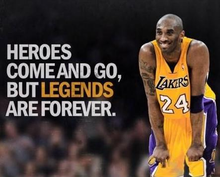
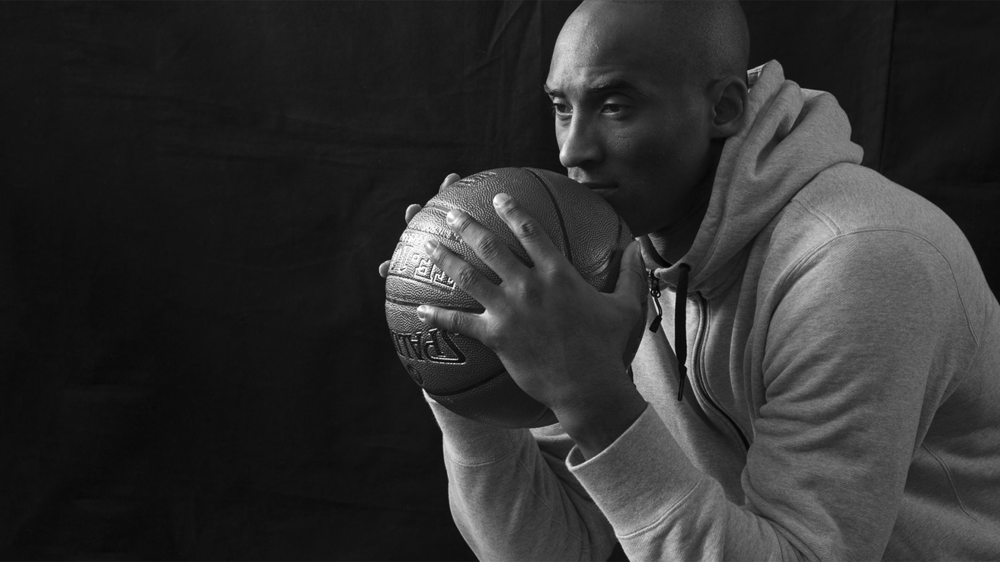

Tribute to Kobe Bryant
On Dreams
Those times when you get up early and you work hard, those times when you stay up late and you work hard, those times when you don’t feel like working, you’re too tired, you don’t want to push yourself, but you do it anyway. That is actually the dream. That’s the dream. It’s not the destination, it’s the journey. And if you guys can understand that, then what you’ll see happen is you won’t accomplish your dreams, your dreams won’t come true; something greater will!
On Failure
When we are saying this cannot be accomplished, this cannot be done, then we are short-changing ourselves. My brain, it cannot process failure. It will not process failure. Because if I have to sit there and face myself and tell myself, 'You're a failure,' I think that is worse, that is almost worse than death.
On not being afraid of failure
I don’t mean to sound cavalier when I say that, but never. It’s basketball.
I’ve practiced and practiced and played so many times. There’s nothing truly to be afraid of, when you think about it …
Because I’ve failed before, and I woke up the next morning, and I’m OK.
eople say bad things about you in the paper on Monday, and then on Wednesday,
you’re the greatest thing since sliced bread. I’ve seen that cycle, so why would I be nervous about it happening?
If you’re afraid to fail, then you’re probably going to fail.
On Pressure
Everything negative - pressure, challenges - is all an opportunity for me to rise.
On life
Have a good time. Life is too short to get bogged down and be discouraged. You have to keep moving. You have to keep going. Put one foot in front of the other, smile and just keep on rolling.
On self-doubt
I have self-doubt. I have insecurity. I have fear of failure. I have nights when I show up at the arena and I’m like, ‘My back hurts, my feet hurt, my knees hurt. I don’t have it. I just want to chill.’ We all have self-doubt. You don’t deny it, but you also don’t capitulate to it. You embrace it.
I’m extremely willful to win, and I respond to challenges. It’s not a challenge to me to win the scoring title, because I know I can.
On working hard
I never looked at [basketball] as work. I didn’t realize it was work until my first year in the NBA.
When I came around, I was surrounded by other professionals and I thought basketball was going to be everything to them and it wasn’t.
And I was like, ‘This is different.’ I thought everybody was so obsessive about the game like me.
It was like, no? Oh, that’s hard work. I get it now.
I want to learn how to become the best basketball player in the world. And if I’m going to learn that, I gotta learn from the best.
Kids go to school to be doctors or lawyers, so forth and so on and that’s where they study. My place to study is from the best.
On laziness
I can’t relate to lazy people. We don’t speak the same language. I don’t understand you. I don’t want to understand you.
I have nothing in common with lazy people who blame others for their lack of success. Great things come from hard work and perseverance. No excuses.
On picking himself up
Be sad. Be mad. Be frustrated. Scream. Cry. Sulk. When you wake up you will think it was just a nightmare only to realize it’s all too real. You will be angry and wish for the day back, the game back THAT play back. But reality gives nothing back and nor should you.
On chasing success
When you make a choice and say, ‘Come hell or high water, I am going to be this,’ then you should not be surprised when you are that. It should not be something that is intoxicating or out of character because you have seen this moment for so long that … when that moment comes, of course it is here because it has been here the whole time, because it has been [in your mind] the whole time.
On Making sacrifices
There's a choice that we have to make as people, as individuals. If you want to be great at something, there is a choice you have to make. We all can be masters at our craft, but you have to make a choice. What I mean by that is, there are inherent sacrifices that come along with that. Family time, hanging out with friends, being a great friend, being a great son, nephew, whatever the case may be. There are sacrifices that come along with making that decision
On perseverance
I create my own path. It was straight and narrow. I looked at it this way: you were either in my way, or out of it. Pain doesn’t tell you when you ought to stop. Pain is the little voice in your head that tries to hold you back because it knows if you continue you will change. I’ve played with IVs before, during and after games. I’ve played with a broken hand, a sprained ankle, a torn shoulder, a fractured tooth, a severed lip, and a knee the size of a softball. I don’t miss 15 games because of a toe injury that everybody knows wasn’t that serious in the first place.
On mindset
The last time I was intimidated was when I was 6 years old in karate class. I was an orange belt and the instructor ordered me to fight a black belt who was a couple years older and a lot bigger. I was scared s–less. I mean, I was terrified and he kicked my ass. But then I realized he didn’t kick my ass as bad as I thought he was going to and that there was nothing really to be afraid of. That was around the time I realized that intimidation didn’t really exist if you’re in the right frame of mind.
On being a role model
The most important thing is to try and inspire people so that they can be great at whatever they want to do.
On the present moment
This is the moment I accept the most challenging times will always be behind me and in front of me.
Trust me, setting things up right from the beginning will avoid a ton of tears and heartache…
On setting boundaries
The most important thing is you must put everybody on notice that you’re here and you are for real.
Haters are a good problem to have. Nobody hates the good ones. They hate the great ones.
On leadership
Leadership is lonely … I’m not going to be afraid of confrontation to get us to where we need to go. There’s a big misconception where people thinking winning or success comes from everybody putting their arms around each other and singing kumbaya and patting them on the back when they mess up, and that’s just not reality. If you are going to be a leader, you are not going to please everybody. You have to hold people accountable. Even if you have that moment of being uncomfortable. A lot of leaders fail because they don’t have the bravery to touch that nerve or strike that chord.